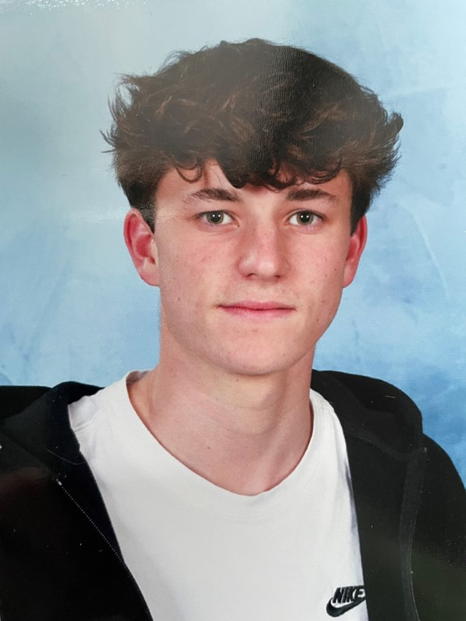

I am a first-year student at IÉSEG School of Management with a strong interest in business, economics, and international affairs. I am a motivated and curious person who enjoys working on projects, developing new skills, and understanding how companies and markets evolve in a global environment.
Discover l'IESEGI’m passionate about buying and reselling clothes online. I enjoy searching for unique pieces, following fashion trends, and finding good deals. Reselling allows me to combine my interest in fashion with business, as I manage listings, communicate with buyers, and handle the whole selling process. Through this activity, I have developed skills in negotiation, marketing, and customer service, while also learning how online marketplaces work.
I’m passionate about discovering new cultures and countries. I enjoy traveling, meeting people from different backgrounds, and learning about their traditions, languages, and ways of life. Exploring new places helps me broaden my perspective and better understand the world around me. It also allows me to become more open-minded, adaptable, and curious, which are qualities I value both personally and academically.
I’m passionate about playing tennis because I enjoy competition and constantly improving my skills. Tennis allows me to challenge myself both physically and mentally, as each match requires focus, strategy, and perseverance. I also appreciate the discipline and commitment needed to progress, whether through regular training or learning from my mistakes during matches. This sport has helped me develop determination, resilience, and a strong competitive spirit, which I apply in other areas of my life as well. 🎾